|
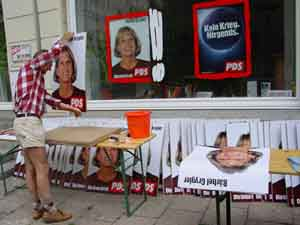 Laura Horelli(SF/D) laura@kuva.fi "pds", computerprint, 2002 |
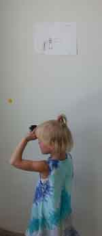
Alexander Steig(D) mail@alexandersteig.de www.alexandersteig.de "untitled (dead surface)", drawing and slide viewer, 2002 |
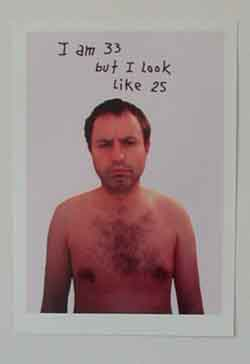 Gunnar Kristinsson(IS/D) "I am 33 but I look like 25", 2000 |
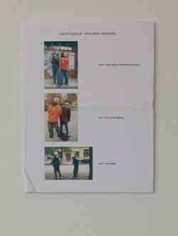 Yuri Leiderman(RUS/D) "Countours of trousers widening", computerprint, 2002 |
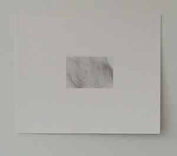 Ulrike Schoeller(D) b/w photo, 2002 |
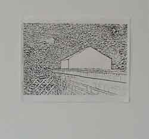 Carsten Greife(D) "My home is my castle", fax, 2002 |
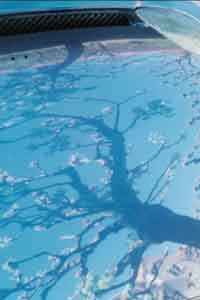 Jeanette Schou(DK) "Autoreflections", 8 photos, 2002 |
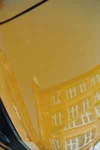 Jeanette Schou(DK) "Autoreflections", 8 photos, 2002 |
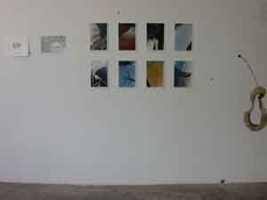 Jeanette Schou(DK) "Autoreflections", 8 photos, 2002 |
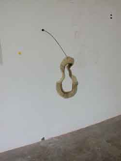 Jürgen Witte(D) www.docwitte.de "mundus", steering-wheel skin, antenna, 2002 |
Rolf Bier
|
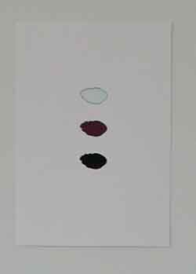 Götz Bergmann(D) "Hommage à Don", 2002 |
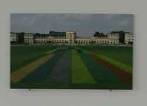 Michael Laube(D) www.kuckei-kuckei.de "United Colors of Dokumenta 11", lampda print, aluminium, 2002 |
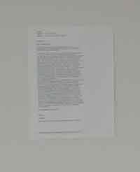 Ásmundur Ásmundsson(IS) "gun is good", e-mail, 2002 |
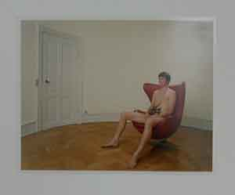 John Øivind Eggesbo(N/DK) "preview of '30 yo, son' normal size 100x150 cm, out of the series 'cycle' (4 photos of four generation men with eels)" |
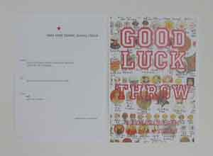 Hannes Malte Mahler(D) www.themahler.com "Good luck throw", computerprints and a rubber horseshoe to play with, 2002 |
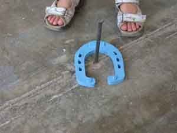 Hannes Malte Mahler(D) www.themahler.com "Good luck throw", computerprints and a rubber horseshoe to play with, 2002 |
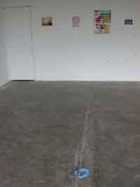 Hannes Malte Mahler(D) www.themahler.com "Good luck throw", computerprints and a rubber horseshoe to play with, 2002 |
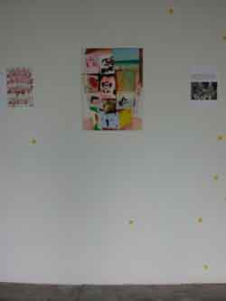 Anne Berning(D) www.kuckei-kuckei.de "Spleen", painting on aluminium, 2001 |
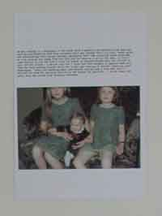 Margrét Blöndal(IS) computerprint, text, 2002 |
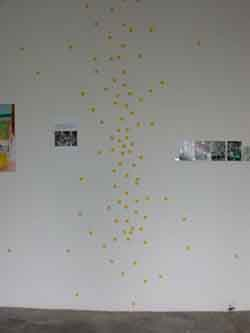 Tumi Magnússon(IS) "o", letters on dots, 2002 |
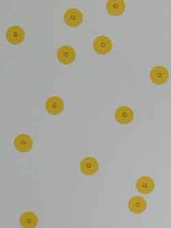 Tumi Magnússon(IS) "o", letters on dots, 2002 |
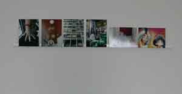 Piotr Komarnicki(PL/D) www.piotrkomarnicki.de "Paris, June 2002", photo-installation, 2002 |
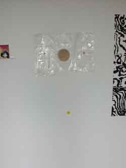 Nina Ivanova(RUS/IS) three objects in vacuumbags, 2002 |
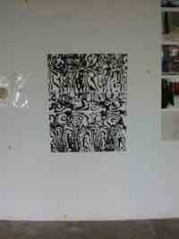 James Carl(CAN) 4x8 on 2,5x4, plywood drawing, 2002 |
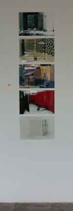 Sophie Roube(F) "Transfect", 5 photos, 2002 |
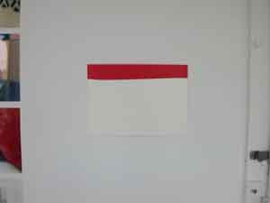 Rainer Splitt(D/USA) "Immersed sheet (red/white)", pigment, alkyd-resin, red PVC, 2000 |
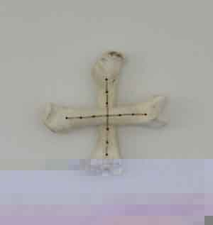 Annamirl Weißhaupl(D) www.weisheaupl.net "Unconditional Love", sewed bones, 2002 |
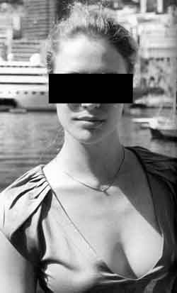 Matten Vogel(D) www.kuckei-kuckei.de "Censored by Matten Vogel, don-version", b/w - print, 110 x 70 cm, 2002 |
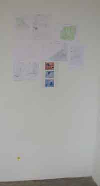 Eva Maria Kollischan(D) www.felixleiter.de fax, drawings, 2000-2002 |
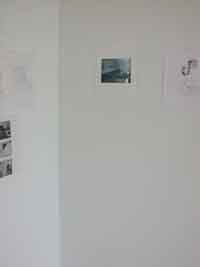 Haraldur Karlsson(IS) "The last piece is the missing one", computerprint, 2002 |
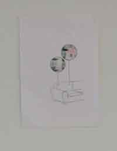 Cecilia Quarnström(S) www.rollon.net/qvarnstrom drawing, 2002 |
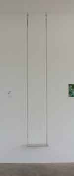 Kaj Nyborg(DK) " s w i n g i n t e x a s ", aluminium swing, 2002 |
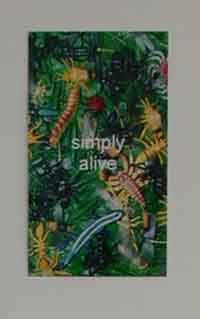 Sabine Öllerer(D) www.oellerer.net "simply alive", Photo, 2002 |
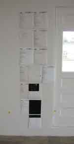
Ráðhildur Ingadóttir(IS) "Gazing", e-mail project, text, 2002 Reykjavik Iceland 08.08´2002 |
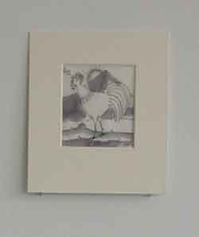 Anna Sigríður Hróðmarsdóttir(IS) www.krokur.is/~ashlundur "El Unico", 2002 |
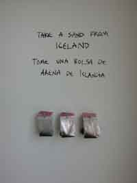 Steinunn Helga Sigurðardóttir(IS/DK) small bags with sand to take and postcards, 2002 |
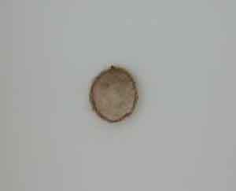 Alda Sigurðardóttir(IS) www.simnet.is/aldasig "Andartak" (A moment), hair, 2001 |
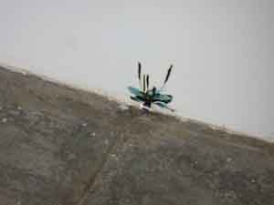 Klaus Fleige(D) "Spontanvegitation", plant photos on plastic, 2002 |
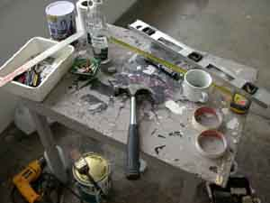 Erling T. V. Klingenberg(IS/DK) "The Artist Disappeared", installation, 2002 |
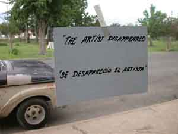 Erling T. V. Klingenberg(IS/DK) "The Artist Disappeared", installation, 2002 |
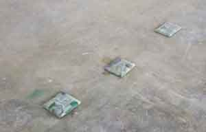 Magnús Sigurðarson(IS) newspapers and seeds, 2002 |
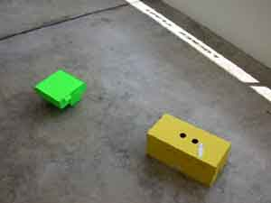 Knut Eckstein(D) "Sungarden", cardboard, 2002 |
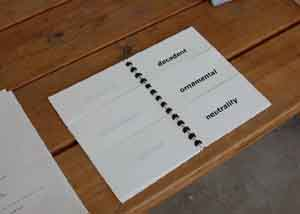 Ómar Smári Kristinsson(IS) "don", bookobject, 2002 |
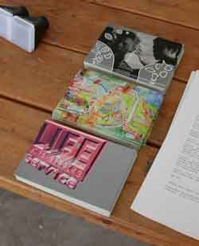 www.LIFEservice.de(D) www.LIFEservice.de postcards to take and internet, 2002 |
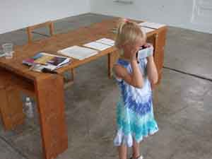
Christiane Wetzel(D/USA) "Chilloutbecken", 3-D file, double-projection in slide viewer, 2002 |